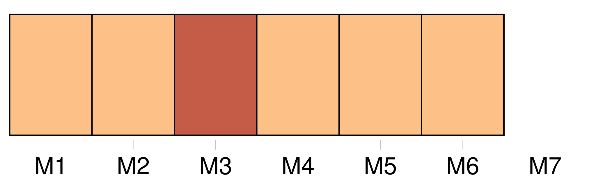
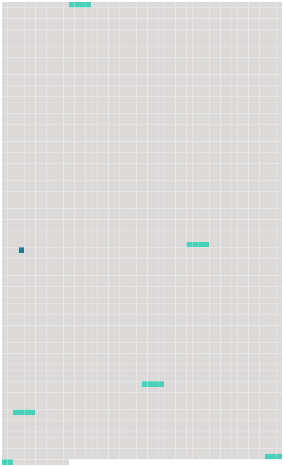

Longueur nb maillons : 6 mentions |
 |
La présidence du conseil supérieur est assurée a tour de rôle par [chacun des Etats contractants] pour une durée d'un an. [97 phrases]
[Chacun des Etats contractants] favorise, dans la limite des crédits disponibles, l'octroi de bourses à ceux de [ses] ressortissants admis à l'Institut dont la situation le rendrait nécessaire, en prenant, le cas échéant, toutes mesures utiles pour l'adaptation appropriée des dispositions régissant l'octroi des bourses. [61 phrases]
Article 28 [9 phrases]
Les huit premiers enseignants de l'Institut sont choisis à l'unanimité par un comité académique provisoire composé de deux représentants de [chacun des Etats contractants] , dont au moins un universitaire. [15 phrases]
Toutefois, le gouvernement du royaume de Danemark peut notifier, par une déclaration déposée au plus tard le 31 décembre 1975 auprès du gouvernement de la République italienne, qui en remet une copie certifiée conforme au gouvernement de [chacun des autres Etats contractants] , que la convention est applicable à ces îles. |
 |
Il est possible de télécharger la ressource sur la page Ortolang |
Si vous avez des questions ou vous voyez des erreurs, merci d'envoyer un mail à silvia.federzoni89@gmail.com |